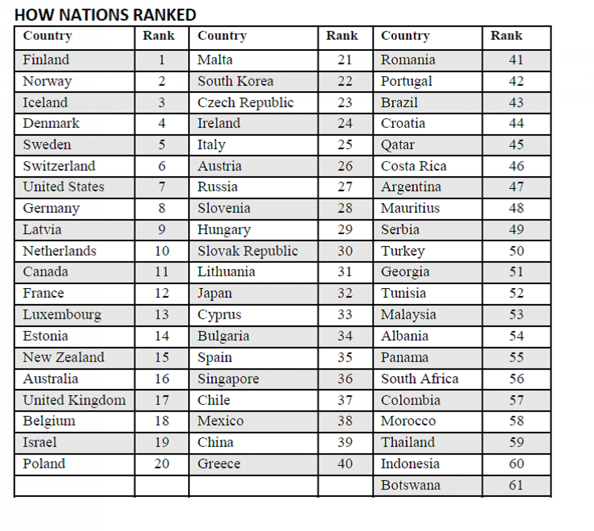

The Programme for International Student Assessment (PISA) tests conducted by the OECD in 2015 and 2018 showed that Indonesian students were performing at lower levels in all areas – science, mathematics and reading – than the OECD average.
The table shows that Indonesia literacy rank is super low. Indonesia ranked at 60th place out of 61 country.
Due to the poor quality of education in Indonesia, we make this website. We believe we can help Indonesian government to make a better education and better future for Indonesia through this website. We also believe we can help a lot of people from Indonesia and out there. With this platform people are able to find sources to study various subjects online- based with a lot of options to choose. With only one tap you will be connected to dozens e-learning websites, educational youtube channels and apps.